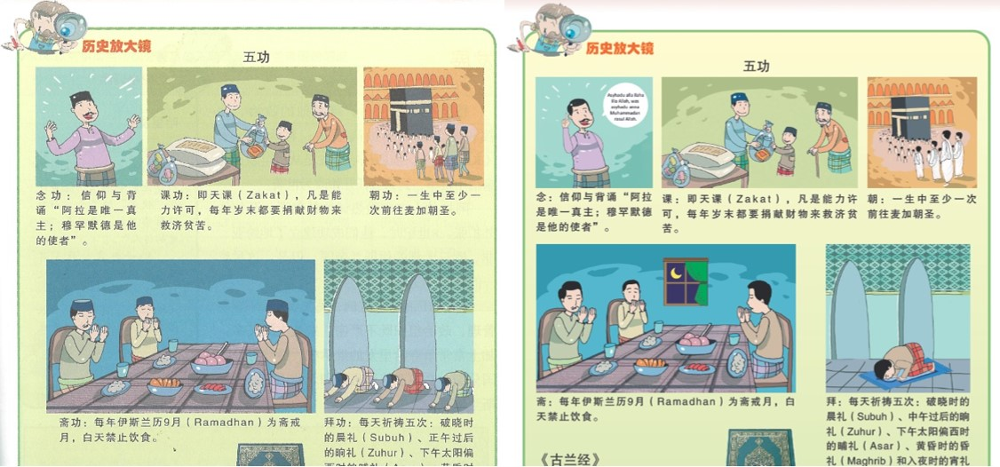

2022年出版的初中历史教科书，左起为第一册、第二册和第三册。
独中历史教科书纠谬正误与澄清
前言
近年在争取承认统考议题中， 经常出现批评独中历史课本内容错误的言论，尤其是TikTok流传类似视频，更引发议论。相关质疑或指摘，主要涉及：一、教科书对伊斯兰教的内容叙述错误；二、内容过于强调华人的历史地位，不符合国家历史叙述；三、质疑教科书中的本国历史内容过少，而中国历史内容过多，缺乏本土意识。这些都是对独中历史教科书的刻板印象，本文特此澄清以正视听。
独中历史教科书概况与课程目标
独中历史教科书是根据董教总华文独中工委会统一课程委员会历史学科委员会拟定的课程标准来编写。拟定课程标准时亦参考我国教育部历来颁布的中学课程相关文件，以及世界各地的中等教育历史科课程纲要或标准。
依据2006年《初中历史课程标准》编写的初中历史教科书，于2008年正式开始使用。目前，已经更新和修正了教材内容，并于2022年推出了新版本。该教材共编有三册，分别为古代史（第一册）、近代史（第二册）和当代史（第三册），以本国历史发展为主线，涵盖相关区域同时代的发展概况。
初中历史课程目标是：
（一）使学生对人类历史的发展产生兴趣。
（二） 通过对历史的学习，培养科学、民主和法治精神以及正确世界观。
（三） 认识我国建国的过程，加强国家意识和爱国精神。
（四） 了解我国多元民族社会的形成和发展，促进亲善团结。
（五） 认识中华民族的历史，为继承并发扬优秀文化奠定基础。
根据2013年发布的《高中历史课程标准》，高中历史教科书应按照区域通史编写，共分为三册。其中，马来西亚与东南亚近代以前的发展紧密相关，因此应合并编写，但其中却较为重视马来西亚（尤其是近代以后）的历史，而对东南亚的历史则归为次要。此外，《中国历史》也纳入了世界史的范畴，增加了汉文化圈里的日本和朝鲜半岛的历史发展，呈现东亚国家之间的关系。同时，《世界历史》也应增加西亚和南亚的历史发展，以全面认识与马来西亚相关的区域历史。
目前，《马来西亚及其东南亚邻国史》和《世界史1之东亚史》已经于2017年和2021年开始在各独中使用。《世界史2之近现代欧美、西亚和南亚史》正在编撰中，预计于2023年定稿出版，2024年开始使用。
高中历史课程宗旨是：
（一） 认识历史学的研究方法，培养分析和判断的思维能力。
（二） 从多方角度，认识过去和现在的事件，以培养科学、民主与法治的价值观。
（三） 通过对马来西亚历史发展的学习，以理性、客观的态度认识我国多元民族社会的形成和发展，以及各民族在建国过程中扮演的角色，进而加强公民、亲善团结的思想意识，了解自己在当今社会的定位。
（四） 透过各区域历史发展的学习，认识当今社会的面貌，提高自身人文素养，成为具有世界观、责任感的世界公民。
（五） 通过本国史和东亚古代史的学习，增进华族历史文化的认识，以继承并发扬优秀的中华文化。
独中历史教科书被指错误的内容和原因
历史研究本身就存在一定的主观性和解释性，因此即使针对同一历史事件，不同的历史学家也可能有不同的解读，导致独中历史教科书存在错误或歧义。
独中历史课程的编写必须兼顾国家课程纲要和华族文化历史，以满足华文独中办学的目的和特殊性。编写独中历史教科书时，编者不仅参考国家教育的理念和内容，还借鉴当前世界历史教育的发展趋势，力求客观、中立地陈述历史事件。然而，史料局限和传统观念的影响，可能导致编者无法全面掌握某些事件或概念。例如涉及伊斯兰教的历史事件时，欧美学者的论述可能与穆斯林的立场有所差异。此外，在编写独中历史教科书的过程中，时间紧迫的安排和庞大的工作量等因素也可能影响审查品质，从而导致教科书存在错误或不足之处。
独中历史教科书里的伊斯兰教内容叙述错误，引起最大关注。初中历史第一册中曾经错误引用图片，其中在朝功的图片中，穆斯林被绘制为穿着马来传统服饰而不是朝圣的戒衣，而在拜功图片的人物膜拜方式也不正确。但是，在发现错误后，这些问题已在2022年出版的修订版本及时纠正。
 关于伊斯兰教的内容叙述的错误，已在之后的修订版本中得到了纠正。左图为错误的内容，右图为修订版。
另一方面， 部分民众质疑独中历史教科书的本国历史内容过少。其实，高初中历史教科书编撰原则有所不同。在初中历史教科书的比率分别为本国史53.73%和外国史46.27%。而高中教科书分为《马来西亚及其东南亚邻国史》、《世界史1之东亚史》和《世界历史》三册。此外，预计2023年推出新教科书《世界史2之近现代欧美、西亚和南亚史》，以取代原来的《世界历史》。独中历史教科书编撰的原则符合国际历史教育趋势，低年级的历史课本重点介绍本国史，高年级的阶段则扩充至周边区域和世界史，培养学生的本土意识和国际观。
最后， 部分民众也会质疑独中历史教科书过于强调华人的历史地位，不符合国家历史叙述。其实，高初中历史教科书的英殖民单元有介绍各族群的本土贡献，不仅强调华人历史和习俗，也肯定本土多元文化与宗教的历史身分，让各族群能促进国民的认同感。
对于独中历史教科书错误之处的纠正和改进
针对独中历史教科书内容错误的批评，董总多次发表声明，强调独中历史教科书的编写目的和原则，并已修正内容。然而，考虑到教材可能以二手书的形式在校际间流传，课程局采取了补救措施，包括修改初中历史教科书封面，重新审查初中历史教科书三册的内容并修订错误，鼓励学生购买新课本。此外，课程局邀请了马来西亚华人穆斯林协会和国中老师审查独中历史教科书的内容，并特别审查涉及敏感内容（如宗教、种族、政治等），以确保内容准确、中立和客观。另外，课程局还拟定教材编撰进度表，规定每科教材定期修订和更新，以反映历史事件的变化和新的历史发现，及时纠正已知的错误。不仅如此，独中历史学科更在社交平台上建立了教师专业群组，为教师提供反馈渠道，方便他们对教科书内容进行反馈和提出修改建议。
编写独中历史教科书，需强调历史研究的主观性和解释性，提醒学生历史事件可能不同的解释和看法，鼓励学生批判思考。同时，也必须保持客观中立的态度，尊重历史事实和学术观点，避免夸大或缩小历史事件的影响和意义。
结论
我国历史叙述争议不断和被政治化，虽然历史教科书常视为形塑国家意识之工具、国民团结的媒介，但往往被主流政治和舆论宣传所主导，造成认知差异。
独中历史课程有责任传达正确的国民历史记忆，培养亲善团结、爱国、多元开放，且具国际观的公民，同时传承华裔优良文化传统。
独中历史教材编制过程中，倘有疏漏在所难免，但编者都会及时修正。历史教育也应注重创新，不断充实新知，引入新的教学方法，增强教学趣味，以提高历史教育水平。